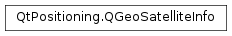

QGeoSatelliteInfo¶
Synopsis¶
Functions¶
- def
__eq__(other) - def
__ne__(other) - def
attribute(attribute) - def
hasAttribute(attribute) - def
removeAttribute(attribute) - def
satelliteIdentifier() - def
satelliteSystem() - def
setAttribute(attribute, value) - def
setSatelliteIdentifier(satId) - def
setSatelliteSystem(system) - def
setSignalStrength(signalStrength) - def
signalStrength()
Detailed Description¶
The
PySide2.QtPositioning.QGeoSatelliteInfoclass contains basic information about a satellite.
-
class
PySide2.QtPositioning.QGeoSatelliteInfo¶ -
class
PySide2.QtPositioning.QGeoSatelliteInfo(other) Parameters: other – PySide2.QtPositioning.QGeoSatelliteInfoCreates a satellite information object.
Creates a satellite information object with the values of
other.
-
PySide2.QtPositioning.QGeoSatelliteInfo.Attribute¶ Defines the attributes for the satellite information.
Constant Description QGeoSatelliteInfo.Elevation The elevation of the satellite, in degrees. QGeoSatelliteInfo.Azimuth The azimuth to true north, in degrees.
-
PySide2.QtPositioning.QGeoSatelliteInfo.SatelliteSystem¶ Defines the GNSS system of the satellite.
Constant Description QGeoSatelliteInfo.Undefined Not defined. QGeoSatelliteInfo.GPS Global Positioning System (USA). QGeoSatelliteInfo.GLONASS Global Positioning System (Russia).
-
PySide2.QtPositioning.QGeoSatelliteInfo.attribute(attribute)¶ Parameters: attribute – PySide2.QtPositioning.QGeoSatelliteInfo.AttributeReturn type: PySide2.QtCore.qrealReturns the value of the specified
attributeas a qreal value.Returns -1 if the value has not been set.
-
PySide2.QtPositioning.QGeoSatelliteInfo.hasAttribute(attribute)¶ Parameters: attribute – PySide2.QtPositioning.QGeoSatelliteInfo.AttributeReturn type: PySide2.QtCore.boolReturns true if the specified
attributeis present in this update.
-
PySide2.QtPositioning.QGeoSatelliteInfo.__ne__(other)¶ Parameters: other – PySide2.QtPositioning.QGeoSatelliteInfoReturn type: PySide2.QtCore.boolReturns true if any of the information for this satellite are not the same as those of
other.
-
PySide2.QtPositioning.QGeoSatelliteInfo.__eq__(other)¶ Parameters: other – PySide2.QtPositioning.QGeoSatelliteInfoReturn type: PySide2.QtCore.boolReturns true if all the information for this satellite are the same as those of
other.
-
PySide2.QtPositioning.QGeoSatelliteInfo.removeAttribute(attribute)¶ Parameters: attribute – PySide2.QtPositioning.QGeoSatelliteInfo.AttributeRemoves the specified
attributeand its value.
-
PySide2.QtPositioning.QGeoSatelliteInfo.satelliteIdentifier()¶ Return type: PySide2.QtCore.intReturns the satellite identifier number.
The satellite identifier number can be used to identify a satellite inside the satellite system. For satellite system GPS the satellite identifier number represents the PRN (Pseudo-random noise) number. For satellite system GLONASS the satellite identifier number represents the slot number.
-
PySide2.QtPositioning.QGeoSatelliteInfo.satelliteSystem()¶ Return type: PySide2.QtPositioning.QGeoSatelliteInfo.SatelliteSystemReturns the Satellite System (GPS, GLONASS, …)
-
PySide2.QtPositioning.QGeoSatelliteInfo.setAttribute(attribute, value)¶ Parameters: - attribute –
PySide2.QtPositioning.QGeoSatelliteInfo.Attribute - value –
PySide2.QtCore.qreal
Sets the value for
attributetovalue.- attribute –
-
PySide2.QtPositioning.QGeoSatelliteInfo.setSatelliteIdentifier(satId)¶ Parameters: satId – PySide2.QtCore.intSets the satellite identifier number to
satId.The satellite identifier number can be used to identify a satellite inside the satellite system. For satellite system GPS the satellite identifier number represents the PRN (Pseudo-random noise) number. For satellite system GLONASS the satellite identifier number represents the slot number.
-
PySide2.QtPositioning.QGeoSatelliteInfo.setSatelliteSystem(system)¶ Parameters: system – PySide2.QtPositioning.QGeoSatelliteInfo.SatelliteSystemSets the Satellite System (GPS, GLONASS, …) to
system.
-
PySide2.QtPositioning.QGeoSatelliteInfo.setSignalStrength(signalStrength)¶ Parameters: signalStrength – PySide2.QtCore.intSets the signal strength to
signalStrength, in decibels.
-
PySide2.QtPositioning.QGeoSatelliteInfo.signalStrength()¶ Return type: PySide2.QtCore.intReturns the signal strength, or -1 if the value has not been set.
© 2018 The Qt Company Ltd. Documentation contributions included herein are the copyrights of their respective owners. The documentation provided herein is licensed under the terms of the GNU Free Documentation License version 1.3 as published by the Free Software Foundation. Qt and respective logos are trademarks of The Qt Company Ltd. in Finland and/or other countries worldwide. All other trademarks are property of their respective owners.